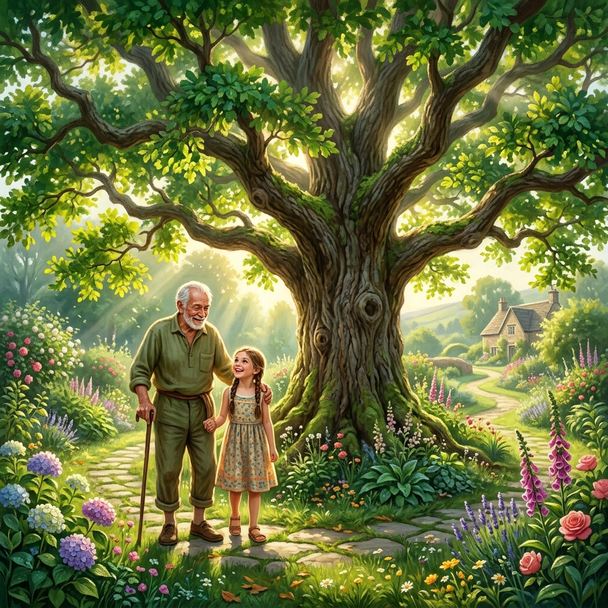
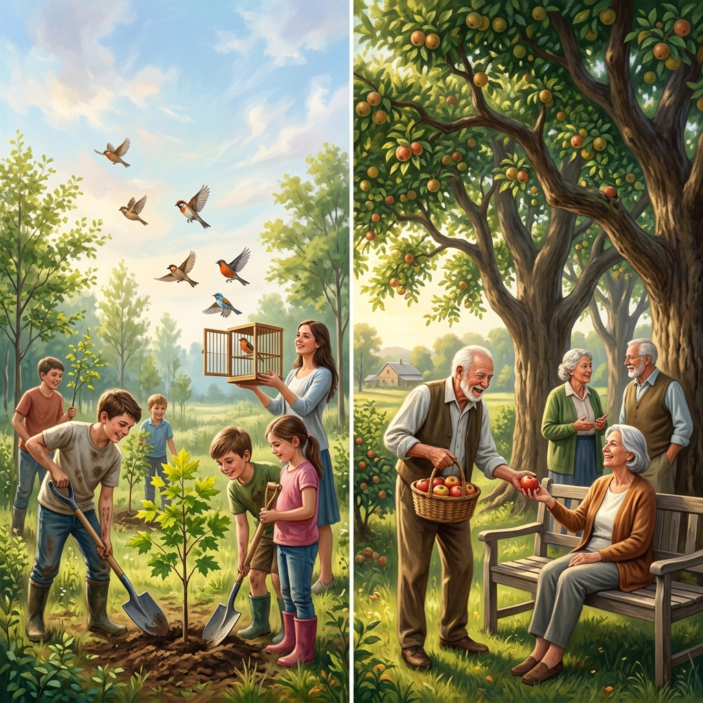
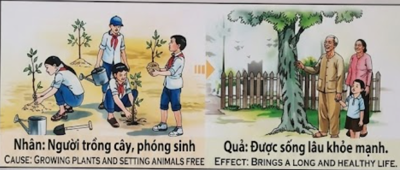

El Aliento de la VidaThe Breath of LifeIl Respiro della Vita生命的气息نَفَسُ الحياةДыхание жизниDer Atem des LebensLe Souffle de la Vie命の息吹O Sopro da VidaHơi Thở Của Sự Sống
Quien nutre la tierra y libera al cautivo, siembra en su propio cuerpo la semilla de una existencia larga y radiante.He who nurtures the earth and frees the captive sows within his own body the seed of a long and radiant existence.Chi nutre la terra e libera il prigioniero semina nel proprio corpo il seme di un'esistenza lunga e radiosa.培育土地并释放被俘虏者的人，在自己的身体内播下了长寿而光彩夺目的存在的种子。من يغذي الأرض ويطلق سراح الأسير، يزرع في جسده بذور وجود طويل ومشرق.Тот, кто питает землю и освобождает пленного, сеет в своем собственном теле семя долгого и сияющего существования.Wer die Erde nährt und den Gefangenen befreit, sät in seinem eigenen Körper den Samen für ein langes und strahlendes Dasein.Celui qui nourrit la terre et libère le captif sème dans son propre corps la graine d'une existence longue et radieuse.大地を育み、囚われし者を解放する者は、自らの体内に長く輝かしい存在の種を蒔くことになります。Quem nutre a terra e liberta o cativo semeia no seu próprio corpo a semente de uma existência longa e radiante.Kẻ chăm sóc đất đai và trả tự do cho muôn loài đang gieo vào chính thân thể mình hạt giống của một đời trường thọ và rạng rỡ.
El karma es el reflejo exacto de nuestras acciones hacia el tejido de la vida. Cuando plantamos un árbol o liberamos a una criatura de su jaula, estamos enviando una señal poderosa al universo: "Valoro la vida y deseo que florezca". Este respeto sagrado por el bienestar de otros seres vivos crea una resonancia que vuelve directamente a nosotros. Al proporcionar refugio y libertad, estamos construyendo, átomo por átomo, nuestra propia fortaleza biológica.
Cuidar de la naturaleza no es solo un acto de ecología, sino de medicina espiritual. Aquellos que protegen el crecimiento de las plantas y devuelven la libertad a los animales cautivos están cultivando una reserva de energía vital. Esta generosidad se manifiesta en el don de la longevidad y una salud inquebrantable. El cuerpo de quien protege la vida se convierte en un templo de vitalidad, permitiéndole disfrutar de una vejez lúcida y vigorosa, bajo la sombra de la paz que él mismo ayudó a plantar.
Karma is the exact reflection of our actions toward the fabric of life. When we plant a tree or free a creature from its cage, we are sending a powerful signal to the universe: "I value life and wish for it to flourish." This sacred respect for the well-being of other living beings creates a resonance that returns directly to us. By providing shelter and freedom, we are building, atom by atom, our own biological fortress.
Caring for nature is not just an act of ecology, but of spiritual medicine. Those who protect the growth of plants and return freedom to captive animals are cultivating a reserve of vital energy. This generosity manifests in the gift of longevity and unbreakable health. The body of the one who protects life becomes a temple of vitality, allowing him to enjoy a lucid and vigorous old age, under the shade of the peace he himself helped to plant.
Il karma è il riflesso esatto delle nostre azioni verso il tessuto della vita. Quando piantiamo un albero o liberiamo una creatura dalla sua gabbia, stiamo inviando un segnale potente all'universo: "Apprezzo la vita e desidero que fiorisca". Questo rispetto sacro para il benessere degli altri esseri viventi crea una risonanza que torna direttamente a noi. Fornendo rifugio e libertà, stiamo costruendo, atomo dopo atomo, la nostra fortezza biologica.
Prendersi cura della natura non è solo un atto di ecologia, ma di medicina spirituale. Coloro que proteggono la crescita delle piante e restituiscono la libertà agli animali in cattività stanno coltivando una riserva di energia vitale. Questa generosità si manifesta nel dono della longevità e di una salute incrollabile. Il corpo di chi protegge la vita diventa un tempio di vitalità, permettendogli di godere di una vecchiaia lucida e vigorosa, sotto l'ombra della pace que egli stesso ha contribuito a piantare.
业力是我们对生命织体采取的行动的准确反映。当我们种下一棵树或从笼子里释放出一个生物时，我们就在向宇宙发送一个强大的信号：“我珍视生命，并希望它蓬勃发展。”这种对其他生命福祉的神圣尊重产生了一种直接回归到我们身上的共鸣。通过提供住所和自由，我们正在逐个原子地建立我们自己的生物堡垒。
爱护自然不仅仅是一个生态行为，也是一种精神医学。那些保护植物生长并还给被俘动物自由的人，正在培育一种生命能量的储备。这种慷慨体现在长寿和坚不可摧的健康恩赐中。保护生命的人的身体变成了一个活力的殿堂，让他得以在他亲手栽种的和平之影下，享受清醒而充满活力的晚年。
الكارما هي الانعكاس الدقيق لأفعالنا تجاه نسيج الحياة. عندما نزرع شجرة أو نحرر مخلوقاً من قفصه ، فإننا نرسل إشارة قوية إلى الكون: 'أنا أقدر الحياة وأتمنى لها أن تزدهر'. هذا الاحترام المقدس لرفاهية الكائنات الحية الأخرى يخلق رنيناً يعود إلينا مباشرة. من خلال توفير المأوى والحرية ، نبني ، ذرة بعد ذرة ، حصننا البيولوجي الخاص.
العناية بالطبيعة ليست مجرد عمل بيئي ، بل هي طب روحاني. أولئك الذين يحمون نمو النباتات ويعيدون الحرية للحيوانات الأسيرة ينمّون احتياطاً من الطاقة الحيوية. يتجلى هذا الكرم في هبة طول العمر والصحة التي لا تتزعزع. جسد من يحمي الحياة يصبح هيكلاً للحيوية ، مما يسمح له بالتمتع بشيخوخة واعية ونشطة ، تحت ظلال السلام الذي ساعد هو نفسه في غرسه.
Карма — это точное отражение наших действий по отношению к ткани жизни. Когда мы сажаем дерево или освобождаем существо из клетки, мы посылаем вселенной мощный сигнал: «Я ценю жизнь и желаю ей процветания». Это священное уважение к благополучию других живых существ создает резонанс, который возвращается непосредственно к нам. Обеспечивая кров и свободу, мы строим, атом за атомом, нашу собственную биологическую крепость.
Забота о природе — это не просто экологический акт, но акт духовной медицины. Те, кто защищает рост растений и возвращает свободу пленным животным, взращивают резерв жизненной энергии. Эта щедрость проявляется в даре долголетия и непоколебимого здоровья. Тело того, кто защищает жизнь, становится храмом жизненной силы, позволяя ему наслаждаться ясной и бодрой старостью под сенью мира, который он сам помог посадить.
Karma ist das genaue Abbild unseres Handelns gegenüber dem Gefüge des Lebens. Wenn wir einen Baum pflanzen oder ein Lebewesen aus seinem Käfig befreien, senden wir ein kraftvolles Signal an das Universum: „Ich schätze das Leben und wünsche mir, dass es blüht.“ Dieser heilige Respekt vor dem Wohlergehen anderer Lebewesen erzeugt eine Resonanz, die direkt zu uns zurückkehrt. Indem wir Schutz und Freiheit gewähren, bauen wir Atom für Atom unsere eigene biologische Festung auf.
Sich um die Natur zu kümmern, ist nicht nur ein Akt der Ökologie, sondern der geistigen Medizin. Wer das Wachstum der Pflanzen schützt und gefangenen Tieren die Freiheit zurückgibt, kultiviert eine Reserve an Lebensenergie. Diese Großzügigkeit manifestiert sich in dem Geschenk der Langlebigkeit und einer unzerstörbaren Gesundheit. Der Körper dessen, der das Leben schützt, wird zu einem Tempel der Vitalität, der es ihm ermöglicht, ein luzides und kraftvolles Alter zu genießen, unter dem Schatten des Friedens, den er selbst mit gepflanzt hat.
Le karma est le reflet exact de nos actions envers le tissu de la vie. Lorsque nous plantons un arbre ou libérons une créature de sa cage, nous envoyons un signal puissant à l'univers : « Je valorise la vie et je souhaite qu'elle s'épanouisse ». Ce respect sacré pour le bien-être des autres êtres vivants crée une résonance qui nous revient directement. En offrant abri et liberté, nous construisons, atome par atome, notre propre forteresse biologique.
Prendre soin de la nature n'est pas seulement un acte d'écologie, mais de médecine spirituelle. Ceux qui protègent la croissance des plantes et redonnent la liberté aux animaux captifs cultivent une réserve d'énergie vitale. Cette générosité se manifeste par le don de la longévité et d'une santé inébranlable. Le corps de celui qui protège la vie devient un temple de vitalité, lui permettant de jouir d'une vieillesse lucide et vigoureuse, à l'ombre de la paix qu'il a lui-même aidé à planter.
カルマは、生命の織物に対する私たちの行動を正確に反映したものです。木を植えたり、檻から生き物を解放したりするとき、私たちは宇宙に強力な信号を送っています。「私は命を大切にし、それが繁栄することを願っています」。他の生き物の幸福に対するこの神聖な敬意は、直接私たちに戻ってくる共鳴を生み出します。避難所と自由を提供することで、私たちは原子一つひとつ、自分自身の生物学的な砦を築いているのです。
自然を大切にすることは、単なるエコロジー活動ではなく、精神的な医学でもあります。植物の成長を守り、囚われの動物に自由を返す人々は、生命エネルギーの蓄えを耕しています。この寛大さは、長寿と揺るぎない健康という贈り物として現れます。命を守る者の体は活力の神殿となり、自らが植えるのを助けた平和の木陰の下で、明晰で活力に満ちた老後を楽しむことができるようになります。
O karma é o reflexo exato das nossas acções para com o tecido da vida. Quando plantamos uma árvore ou libertamos uma criatura da sua gaiola, estamos a enviar um sinal poderoso ao universo: "Valorizo a vida e desejo que ela floresça". Este respeito sagrado pelo bem-estar de outros seres vivos cria uma ressonância que volta directamente para nós. Ao proporcionar abrigo e liberdade, estamos a construir, átomo por átomo, a nossa própria fortaleza biológica.
Cuidar da natureza não é apenas um ato de ecologia, mas de medicina espiritual. Aqueles que protegem o crescimento das plantas e devolvem a liberdade aos animais cativos estão a cultivar uma reserva de energia vital. Esta generosidade manifesta-se no dom da longevidade e de uma saúde inabalável. O corpo de quem protege a vida torna-se um templo de vitalidade, permitindo-lhe desfrutar de uma velhice lúcida e vigorosa, sob a sombra da paz que ele próprio ajudou a plantar.
Nhân quả chính là tấm gương phản chiếu trung thực cách chúng ta đối xử với sự sống xung quanh. Khi trồng một cái cây hay phóng sinh cho một sinh linh thoát khỏi cảnh cầm tù, chúng ta đang gửi đi một thông điệp mạnh mẽ tới vũ trụ: 'Tôi trân trọng mạng sống và mong cầu sự sinh sôi'. Sự tôn trọng thiêng liêng đối với an lạc của muôn loài tạo ra một luồng năng lượng tích cực dội ngược lại chính mình. Bằng cách trao đi nơi trú ẩn và sự tự do, chúng ta đang bồi đắp cho từng tế bào thân thể một pháo đài sinh học vững chắc.
Chăm sóc thiên nhiên không chỉ là hành động bảo vệ môi trường, mà là liều thuốc cho tâm hồn. Những ai che chở mầm xanh và giải thoát chim muông, cá cảnh đang âm thầm tích lũy một nguồn nội lực dồi dào. Sự hào hiệp đó sẽ mang lại món quà là tuổi thọ cao và sức khỏe dẻo dai. Thân xác của người bảo vệ sự sống sẽ trở thành đền đài của sinh khí, cho phép họ hưởng một tuổi già sáng suốt, tráng kiện dưới bóng mát bình yên mà chính họ đã dày công vun vén.
Los Jardineros de Kioto
The Gardeners of Kyoto
I Giardinieri di Kyoto
京都的园丁
بستانيو كيوتو
Садовники из Киото
Die Gärtner von Kyoto
Les Jardiniers de Kyoto
京都の庭師
Os Jardineiros de Quioto
Những Người Trồng Cây Ở Kyoto
En las colinas de Kioto, vivían dos hermanos: Kenji y Hiro. Kenji siempre estaba ocupado con sus negocios, cortando árboles para expandir su almacén y atrapando pájaros exóticos para venderlos. Tenía mucho dinero, pero siempre estaba cansado y enfermo. Por el contrario, Hiro pasaba su tiempo libre plantando cerezos y comprando animales solo para liberarlos. "Pierdes tu tiempo y tu dinero", se burlaba Kenji.
Pasaron cincuenta años. Kenji, encerrado en su gran casa, era un hombre frágil y dependiente de medicinas. Hiro, por el contrario, subía cada mañana a las colinas para ver florecer los árboles que había plantado. Kenji le preguntó: "¿Cómo es que tus ojos brillan?". Hiro respondió: "Cada árbol que planté me dio un año de sombra, y cada ave que liberé me dio un suspiro de vida. Yo no planté madera, Kenji; planté mi propia salud".
In the hills of Kyoto lived two brothers: Kenji and Hiro. Kenji was always busy with his business, cutting trees to expand his warehouse and catching exotic birds to sell. He had a lot of money but was always tired and sick. In contrast, Hiro spent his free time planting cherry trees and buying animals just to release them. "You're wasting your time and money," Kenji would mock.
Fifty years passed. Kenji, locked in his large house, was a fragile man dependent on medicine. Hiro, however, climbed the hills every morning to see the trees he had planted blossom. Kenji asked him: "How is it that your eyes shine?". Hiro replied: "Every tree I planted gave me a year of shade, and every bird I freed gave me a breath of life. I didn't plant wood, Kenji; I planted my own health."
Sulle colline di Kyoto vivevano due fratelli: Kenji e Hiro. Kenji era sempre impegnato nei suoi affari, abbattendo alberi para ampliare il suo magazzino e catturando uccelli esotici para venderli. Aveva molto denaro ma era sempre stanco e malato. Al contrario, Hiro passava il tempo libero piantando ciliegi e comprando animali solo para liberarli. "Perdi tempo e soldi", lo scherniva Kenji.
Passarono cinquant'anni. Kenji, rinchiuso nella sua grande casa, era un uomo fragile que dipendeva dalle medicine. Hiro, invece, saliva ogni mattina sulle colline para vedere fiorire gli alberi que aveva piantato. Kenji gli chiese: "Come mai i tuoi occhi brillano?". Hiro rispose: "Ogni albero que ho piantato mi ha dato un anno di ombra, e ogni uccello que ho liberato mi ha dato un respiro di vita. Non ho piantato legno, Kenji; ho piantato la mia salute".
在京都的山丘上住着两兄弟：Kenji 和 Hiro。Kenji 总是忙于生意，砍伐树木以扩建仓库，并捕捉异国情调的鸟类出售。他有很多钱，但总是疲惫不堪且体弱多病。相比之下，Hiro 利用业余时间种植樱桃树，并购买动物只为了释放它们。“你在浪费你的时间和金钱，”Kenji 嘲笑道。
五十年过去了。门窗紧闭在豪宅里的 Kenji 已经是一个依赖药物、身体虚弱的人。然而，Hiro 每天早上都会爬上山丘看他种植的树木开花。Kenji 问他：“为什么你的眼睛会发光？”Hiro 回答说：“我种下的每一棵树都给了我一年的绿荫，我释放出的每一只鸟都给了我一个生命之息。我种下的不是木头，Kenji；我种下的是我自己的健康。”
في تلال كيوتو، عاش شقيقان: كينجي وهيرو. كان كينجي مشغولاً دائمًا بأعماله، حيث كان يقطع الأشجار لتوسيع مستودعاته ويمسك بالطيور الغريبة لبيعها. كان لديه الكثير من المال لكنه كان دائمًا متعبًا ومريضًا. وفي المقابل، قضى هيرو وقت فراغه في زراعة أشجار الكرز وشراء الحيوانات لمجرد إطلاق سراحها. وكان كينجي يسخر منه قائلاً: 'أنت تضيع وقتك ومالك'.
مرت خمسون عامًا. وكان كينجي، المحبوس في منزله الكبير، رجلاً ضعيفاً يعتمد على الأدوية. أما هيرو، فكان يصعد التلال كل صباح ليرى الأشجار التي زرعها تزهر. سأله كينجي: 'كيف تشرق عيناك هكذا؟'. فأجاب هيرو: 'كل شجرة زرعتها منحتني عامًا من الظل، وكل طائر حررته منحني نَفَسَ حياة. أنا لم أزرع خشباً يا كينجي؛ لقد زرعت صحتي'.
На холмах Киото жили два брата: Кенджи и Хиро. Кенджи всегда был занят своими делами, вырубая деревья для расширения склада и ловя экзотических птиц на продажу. У него было много денег, но он всегда был усталым и больным. Напротив, Хиро проводил свободное время, сажая вишневые деревья и покупая животных только для того, чтобы выпустить их на волю. «Ты тратишь время и деньги впустую», — насмехался Кенджи.
Прошло пятьдесят лет. Кенджи, запертый в своем большом доме, был немощным человеком, зависимым от лекарств. Хиро же каждое утро поднимался на холмы, чтобы увидеть, как цветут деревья, которые он посадил. Кенджи спросил его: «Почему твои глаза сияют?». Хиро ответил: «Каждое дерево, которое я посадил, дало мне год тени, и каждая птица, которую я освободил, дала мне вздох жизни. Я сажал не дерево, Кенджи; я сажал свое собственное здоровье».
In den Hügeln von Kyoto lebten zwei Brüder: Kenji und Hiro. Kenji war immer mit seinen Geschäften beschäftigt, fällte Bäume, um sein Lager zu erweitern, und fing exotische Vögel ein, um sie zu verkaufen. Er hatte viel Geld, war aber immer müde und krank. Im Gegensatz dazu verbrachte Hiro seine Freizeit damit, Kirschbäume zu pflanzen und Tiere zu kaufen, nur um sie wieder freizulassen. „Du verschwendest deine Zeit und dein Geld“, spottete Kenji.
Fünfzig Jahre vergingen. Kenji, eingesperrt in seinem großen Haus, war ein gebrechlicher Mann, der von Medikamenten abhängig war. Hiro hingegen bestieg jeden Morgen die Hügel, um die Bäume blühen zu sehen, die er gepflanzt hatte. Kenji fragte ihn: „Wie kommt es, dass deine Augen leuchten?“. Hiro antwortete: „Jeder Baum, den ich pflanzte, gab mir ein Jahr Schatten, und jeder Vogel, den ich befreite, gab mir einen Lebenshauch. Ich habe kein Holz gepflanzt, Kenji; ich habe meine eigene Gesundheit gepflanzt.“
Dans les collines de Kyoto vivaient deux frères : Kenji et Hiro. Kenji était toujours occupé par ses affaires, coupant des arbres pour agrandir son entrepôt et capturant des oiseaux exotiques pour les vendre. Il avait beaucoup d'argent mais était toujours fatigué et malade. Au contraire, Hiro passait son temps libre à planter des cerisiers et à acheter des animaux juste pour les libérer. « Tu perds ton temps et ton argent », se moquait Kenji.
Cinquante ans passèrent. Kenji, enfermé dans sa grande maison, était un homme fragile dépendant des médicaments. Hiro, au contraire, grimpait chaque matin sur les collines pour voir fleurir les arbres qu'il avait plantés. Kenji lui demanda : « Comment se fait-il que tes yeux brillent ? ». Hiro répondit : « Chaque arbre que j'ai planté m'a donné un an d'ombre, et chaque oiseau que j'ai libéré m'a donné un souffle de vie. Je ne ai pas planté du bois, Kenji ; j'ai planté ma propre santé ».
京都の山に、ケンジとヒロという二人の兄弟が住んでいました。ケンジは商売に忙しく、倉庫を広げるために木を切り倒し、珍しい鳥を捕らえては売っていました。彼は大金を持っていましたが、いつも疲れ果て、病気がちでした。対照的に、ヒロは暇を見つけては桜の木を植え、売りに出されている動物を買い取っては森に逃がしていました。「時間と金の無駄だ」とケンジはあざけりました。
50年が経ちました。大きな屋敷に引きこもったケンジは、薬に頼るか弱い老人となりました。一方、ヒロは毎朝、自分が植えた木々が花を咲かせるのを見るために、しっかりとした足取りで山に登っていました。ケンジは尋ねました。「どうしてそんなに目が輝いているんだ？」。ヒロは答えました。「植えた木は一年の日陰をくれ、逃がした鳥は命の息吹をくれた。私はただの木を植えたんじゃない、ケンジ。自分自身の健康を植えていたんだ」。
Nas colinas de Quioto, viviam dois irmãos: Kenji e Hiro. Kenji estava sempre ocupado com os seus negócios, cortando árvores para expandir o seu armazém e apanhando pássaros exóticos para os vender. Tinha muito dinheiro, mas estava sempre cansado e doente. Pelo contrário, Hiro passava o seu tempo livre a plantar cerejeiras e a comprar animais apenas para os libertar. "Perdes o teu tempo e o teu dinheiro", zombava Kenji.
Passaram cinquenta anos. Kenji, fechado na sua grande casa, era um homem frágil e dependente de medicamentos. Hiro, pelo contrário, subia todas as manhãs às colinas para ver florescer as árvores que tinha plantado. Kenji perguntou-lhe: "Como é que os teus olhos brilham?". Hiro respondeu: "Cada árvore que plantei deu-me um ano de sombra, e cada ave que libertei deu-me um sopro de vida. Eu não plantei madeira, Kenji; plantei a minha própria saúde".
Tại vùng đồi Kyoto thơ mộng, có hai anh em nhà nọ tên là Kenji và Hiro. Kenji suốt ngày vùi đầu vào kinh doanh, lão không ngần ngại chặt hạ cây rừng để mở kho bãi và săn lùng chim quý để bán kiếm lời. Tiền bạc lão chẳng thiếu, nhưng thân thể lúc nào cũng mệt mỏi và ốm đau. Trái lại, Hiro dành thời gian rảnh rỗi để trồng thêm những rặng anh đào và mua lại chim thú từ các tay thợ săn chỉ để thả chúng về với thiên nhiên. 'Lão thật hoang phí thời gian và tiền bạc vào những việc vô ích', Kenji thường mỉa mai như thế.
Năm mươi năm trôi qua. Kenji giờ đây phải sống phụ thuộc vào thuốc men, thân hình gầy gò trong dinh thự xa hoa. Còn Hiro, mỗi sáng lão vẫn bước chân nhanh nhẹn lên đồi để ngắm những tán cây mình trồng khi xưa đang nở rộ. Kenji thắc mắc: 'Tại sao đôi mắt lão vẫn còn tinh anh đến thế?'. Hiro mỉm cười đáp: 'Mỗi cái cây tôi trồng trả ơn tôi bằng một năm bóng mát, mỗi sinh linh tôi cứu giúp tặng cho tôi một hơi thở của sự sống. Tôi không chỉ trồng cây, Kenji ạ; tôi đang vun trồng chính sức khỏe của mình đấy'.

La Inspiración Original
The Original Inspiration
Nguồn cảm hứng ban đầu
La historia que hemos relatado en este capítulo está inspirada por el pasaje de la escena original de los murales «Tranh Nhân Quả» (Ilustraciones del Karma) del Templo Linh Ung en Da Nang, capturado en la imagen.
The story we have told in this chapter is inspired by the passage from the original scene of the “Tranh Nhân Quả” (Illustrations of Karma) murals of the Linh Ung Temple in Da Nang, captured in the image.
Câu chuyện chúng tôi kể trong chương này được lấy cảm hứng từ đoạn trích từ cảnh gốc của bức tranh tường “Tranh Nhân Quả” ở chùa Linh Ứng ở Đà Nẵng, được ghi lại trong hình ảnh.

Como se puede apreciar en el pasaje extraído del mural, la causa y su efecto kármico están descritos originalmente en vietnamita y con una breve traducción al inglés. A continuación, te ofrecemos su traducción detallada en los distintos idiomas:
As can be seen in the passage taken from the mural, the cause and its karmic effect are originally described in Vietnamese and with a brief translation into English. Below, we offer you its detailed translation in the different languages:
🇻🇳 Tiếng Việt:
Nhân: Người trồng cây, phóng sinh.
Quả: Được sống lâu khỏe mạnh.
🇬🇧 English:
Cause: Growing plants and setting animals free.
Effect: Brings a long and healthy life.
Traducción Recreada:
Causa: Plantar árboles y liberar animales cautivos.
Efecto: Trae una vida larga y saludable.
Recreated Translation:
Cause: Planting trees and setting animals free.
Effect: Brings a long and healthy life.
Traduzione ricreata:
Causa: Piantare alberi e liberare animali.
Effetto: Porta una vita lunga e sana.
重新创建的翻译:
原因：种植植物和放生动物。
影响：带来长寿和健康的生活。
الترجمة المعاد صياغتها:
السبب: زراعة النباتات وإطلاق سراح الحيوانات.
الأثر: يؤدي إلى حياة طويلة وصحية.
Воссозданный перевод:
Причина: Посадка деревьев и освобождение животных.
Следствие: Приносит долгую и здоровую жизнь.
Neu erstellte Übersetzung:
Ursache: Pflanzen züchten und Tiere freilassen.
Wirkung: Schenkt ein langes und gesundes Leben.
Traduction recréée:
Cause : Planter des arbres et libérer des animaux.
Effet : Apporte une vie longue et saine.
再作成された翻訳:
原因：植物を育て、動物を解放すること。
影響：長寿で健康な生活をもたらします。
Tradução recriada:
Causa: Plantar árvores e libertar animais.
Efeito: Traz uma vida longa e saudável.